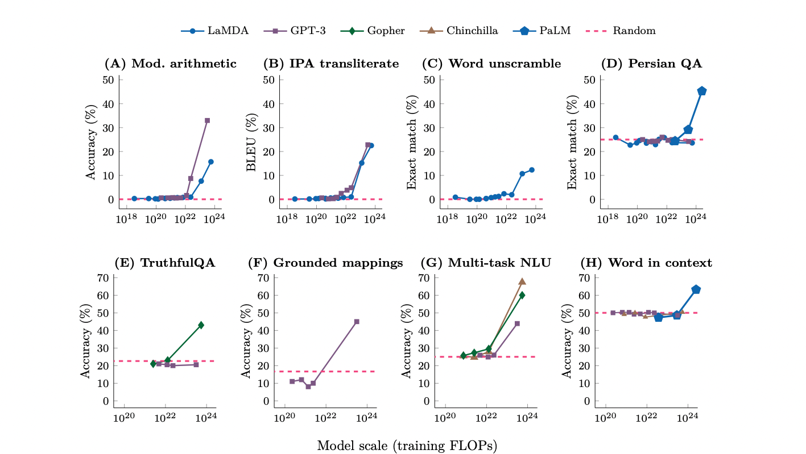

ani = animation.FuncAnimation(
fig,
update,
interval=300,
frames=200,
init_func=init,
cache_frame_data=False
)
HTML(ani.to_jshtml())Bias-Variance decomposition
Decomposing the out-of-sample error of a Learner.
learning theory
ML
presentation
Motivations for investigating the phenomenon:
Who ordered that?
There are a number of properties which have made our AI journey easier and we currently don’t really know how to explain. For instance, here are three things that have made our journey to successful AI an easier feat and which have made current systems, like LLMs, possible:
- Local minima that the optimisation process finds:
- In huge dimensional space we’re still able to find a good enough minima. NB Global minima virtually impossible to find. We don’t seem to fall in a bad local minima.
- Said differently we’re able to achieve a good minima with less computation than expected
- Over-parametrisation and generalisation:
- Num params >> data
- Many final states of the model would be able to fit the training data perfectly but won’t actually model the true underlying function / process
- i.e we’re able to generalise to unseen data
- said differently we require far less information than we would expect, e.g. data set size multiple times larger than models
- Emergent abilities
- Tasks cannot be accomplished for any model until we reach a certain scale/ size. Past that abilities seem to emerge. All at once?

Are MLPs and Linear Regression really that different?
Conceptualising the Hypothesis space
A view into the generalisation error
The concepts of Bias and Variance allow us to understand the out-of-sample error in terms of constituents that we can reason about clearly and which give us insights into the fundamental behaviour of systems which learn from data1.
1 This is inherently a frequentist view. If we view the process of learning a function from data as a process of obtaining an estimator, i.e. a point estimator in function space, then we’ll be able to decompose the expected out-of-sample error in terms of the bias and variance of the function estimator.
We shall be looking at the expected out-of-sample error and its decomposition into clearly interpretable constituents.
It’s important to note that the decomposition/analysis given here applies to a regression problem with squared error loss:
In this case the decomposition is neat and this benefits the understanding of what is happening.
Something similar can be done, given some reformulation of definitions, for some other lossess (see Domingos (2000) reference).
Principle however is generically applicable. It stands across all instances of learning from data – in general however the decomposition is not as neat/clear.
Worth mentioning that this isn’t the only view into the out-of-sample error. VC theory studies the question of generalisation from a different point of view – i.e. in terms of complexity and capacity of the hypothesis space.
Finally, note that we’re here using the term out-of-sample error instead of generalisation error.
I’ll be reserving the term generalisation error to mean the difference between the error in the training set and the error in the testing (or out-of-sample) set.
Thus, out-of-sample is the error on data not present in the set of data used for fitting the model.
In a nutshell
In a nutshell the Bias-Variance decomposition decomposes the expected out-of-sample error into:
How well the Hypothesis space, \(\mathcal{H}\) can approximate the true function that we’re trying to fit, \(f\) – i.e. related to the approximation power of the family of functions that the learning algorithm has the ability to search in2.
How well, for a given training set, we can “zoom in” on a good hypothesis, \(h \in \mathcal{H}\). That is, when fitting to given data the learning algorithm will select a hypothesis from the hypothesis space. Thus this is related to the generalisation power of the given hypothesis.
2 There is an important subtlety here; in reality the accessible space of hypothesis may well (and often is) smaller that the space of family of functions that the learning algorithm can chose from. The Hypothesis space is in practice determined by additional limitations such as the optimisation algorithm’s ability to navigate the hypothesis space. We will see how this does indeed have an effect: the effective representational capacity (the effective space of hypothesis) being smaller than the potential representational capacity. This can be thought of as a form of implicit regularization.
Note that 2 implies that we’re dealing with the selection of a hypothesis in the hypothesis space and this is affected both by the amount of available training data and the optimisation process utilised to fit the model, i.e. the navigation skills of the learning algorithm when producing a predictor which itself is affected by a number of things, for instance the initialisation of the weights3.
3 This isn’t the case for learning processes that are closed form, e.g. using the Normal equations to fit a linear regression model.
Problem statement
We will be considering a distribution that generates “regression” data. We denote this data-generation distribution by \(P_{g}\). We assume that we are given a budget, \(n\), and we sample \(n\) times from \(P_{g}\) to obtain a training data-set, \[ D = \{(x_{1}, y_{1}), (x_{2}, y_{2}), ..., (x_{n}, y_{n})\}, \] formed of i.i.d. points \[ (x_i, y_i) \sim P_g (X, Y), \] with \(X \in \mathcal{X}\) and \(Y \in \mathbb{R}\).
Further, we consider
- a hypothesis space, \(\mathcal{H}\), i.e. a class of predictors \(h: \mathcal{X} \rightarrow \mathbb{R}: x \mapsto \hat y\), and
- a learner, \(\mathcal{L}\), i.e. a loss function and an optimisation algorithm, which applied to the data-set \(D\) will produce a predictor. That is \[ \mathcal{L}: \mathcal{D} \rightarrow \mathcal{H}: D \mapsto h_D = \mathcal{L} (D), \] where \(\mathcal{D}\) is the space of \(n\)-dimensional datasets.
For our analysis we will consider a square loss error, where the loss for datum \((x, y)\) is \[ \delta_D (x, y) = \left( h_D (x) - y \right)^2 \] and the expected out-of-sample error is given by \[ \begin{align*} \Delta_{P_g} &= \mathbb{E}_{(x, y)} \left[ \delta_D (x, y) \right] \\ &= \int_{\mathcal{X} \times \mathbb{R}} \delta_D \left( x, y \right) P_g (x, y) \text{d}x \text{d} y. \end{align*} \]
This should be compared with the in-sample error, which is given by \[ \Delta_{D} = \frac{1}{|D|} \sum_D \delta_D \left( x, y \right). \]
It is crucial to note that there is a dependency on the training set, \(D\). Specifically, that this is the out-of-sample error given \(h_{D}\), i.e. \[ \mathbb{E}_{(x, y) \sim P_{g}|h_{D}}[(h_{D}(x) - y)^{2}] = \mathbb{E}_{(x, y) \sim P_{g}}[(h_{D}(x) - y)^{2} | h_{D}] \]
Observe that we can easily ascertain, given \(h_{D}\), the in-sample error; we utilise \(D\) to obtain the estimate empirically. However we are really interested in ascertaining the out-of-sample error, i.e. that on new data sampled from the data-generating distribution, i.e. \(D' \sim P_{g}\) with \(D' \neq D\).
We cannot however compute such expectation as for that we’d need to sample infinitely many times and evaluate the error for each. However we could view this differently and ask what the out-of-sample error for the learning algorithm, \(\mathcal{L}\), is.
To reiterate: we start with a hypothesis space \(\mathcal{H}\), i.e. a learning algorithm (family of functions the learning algorithm can chose from). Then, given a dataset \(D\), we obtain a hypothesis \(h \in \mathcal{H}\) (i.e. a model/predictor): \[ \mathcal{L}: D \sim P_{g} \rightarrow h_{D} = \mathcal{L}(D) \]
For instance, \(\mathcal{L}\) could be an SVM, Perceptron, GLM etc.
Note: \(D\) is a random variable (since a set of random variables is itself a random variable) and because \(h_{D} = \mathcal{L}(D)\), and \(\mathcal{L}\) is (at best) a deterministic function of a random variable, then \(h_{D}\) is also a random variable. Clearly, sampling a different \(D'\) we would result in a different function \(h_{D'}\). We can therefore consider \(\mathcal{L}\) a distribution over functions.
The benefit of this is that we can think of the expected hypothesis, \(\overline{h}\), which we can think of as the expected classifier: \[ \overline{h} = \mathbb{E}_{D \sim P^{n}} [ \mathcal{L}(D)] = \int_{D} h_{D} P(D) dD \]
To estimate the function \(\overline{h}\) we sample the sets \(D\), train the model to get \(h_{D}\) and then average the output predictions.
Note
Note however that:
the average is not the average of the weights of the fitted model. This would be fine for a linear model but not for other models. The average would be the average of the predictions for the infinitely many \(h_{D}\)s
for classification the average prediction would be the mode
the “average” hypothesis is mostly a conceptual tool considered as the “best” possible hypothesis we can get using the hypothesis set, \(\mathcal{H}\). However we don’t actually know that \(\overline{h}\) is indeed the best – being an average however we expect to be a pretty good hypothesis
\(\overline{h}\) might not be in the hypothesis set, i.e. \(\overline{h} \notin \mathcal{H}\)
Because the hypothesis are random variables we can rid ourselves of the dependency on \(D\) by marginalising based on a given budget of \(n\) examples:
\[ \mathbb{E}_{D \sim P(X, Y)}[\Delta_{P_g}] = \mathbb{E}_{D \sim P(X, Y)} [ \mathbb{E}_{(x, y) \sim P_{g}}[(h_{D}(x) - y)^{2}]] \]
That is, we are now considering the expected error of the learning algorithm, \(\mathcal{L}\), without conditioning on a specific \(h_{D}\) any longer. Recall that \(\mathcal{L}\) is some procedure to come up with a predictor, e.g. SVMs in general. To be very precise then we are actually studying the following quantity: \[ \mathbb{E}_{\underset{D \sim P^{n}}{(x, y) \sim P}}[(h_{D}(x) - y)^{2} | \mathcal{L}] \]
The process is thus as follows:
we fix \(\mathcal{L}\), i.e. the learning algorithm and hence the the hypothesis space \(\mathcal{H}\)
we sample \(D \sim P_{g}\) with \(|D| = n\), for some budget, \(n\)
we train the model, thus picking an \(h \in \mathcal{H}\) via \(h_{D} = \mathcal{L}(D)\)
sample the test points \((x, y)\) and compute the error for all samples
repeat 2 - 4 again and again and compute the error.
For this discussion assume no noise in the data such as to simplify the derivation.
One final consideration should be the noise intrinsic in the data itself. This need not always be the case but it is informative to generalise to this situation. In the case where there is no stochasticity this term can simply be ignored (in fact it will drop out). In the case where the process is stochastic then we can see that, given \(x\) there may not be a unique \(y\). We can see this explicitly by decomposing the distribution;
\[ P(X, Y) = P(Y|X)P(X) \] Thus, given \(x \sim P(X)\) the value of \(y\) is still uncertain.
In regression, for a given \(x\), the optimal decision is the expected \(y\), i.e. \(\overline{y}\). Compare this to the case of classification where, given \(x\), we predict with the Bayes optimal classifier (for classification this is the mode of the distribution). Thus, \[ \overline{y}(x) = \mathbb{E}_{y|x}(y) \] and therefore the expected label is given by:
\[ \overline{y}(x) = \int y P(y | x ) dy \] i.e. for specific \(x\) given all the possible \(y\) given by \(P(Y|X)\), we want to predict the expected \(y\).
Noise will add a term to the decomposition but it change the point I want to drive in this presentation.
Decomposing the error
We have: \[ \mathbb{E}_{\underset{D \sim P^{n}}{(x, y) \sim P}}[(h_{D}(x) - y)^{2} | \mathcal{L}] = \underset{D}{\int} \underset{x}{\int}\underset{y}{\int} [ h_{D}(x) - y ]^{2} P(x, y | \mathcal{L}) P(D | \mathcal{L}) dydxdD \]
However \(P(x, y | \mathcal{L}) = P(x, y)\) and \(P(D | \mathcal{L}) = P(D)\)
The above quantity is what we are really interested in, the quantity that is of interest to us when chosing or designing an algorithm. It is able to inform us of the following: for a given data-generating distribution, \(P\), and a given budget, \(n\), how well are we going to do, i.e. how good is the (expected) out-of-sample error.
Warning
From now on I’ll drop the explicit dependencies to slim the notation
Decomposition
The trick to use is to utilise the expected classifier to modularise the expectation: \[ \mathbb{E}_{\underset{D \sim P^{n}}{(x, y) \sim P}}[(h_{D}(x) - y)^{2} ] = \mathbb{E}_{\underset{D \sim P^{n}}{(x, y) \sim P}}[ (h_{D}(x) - \overline{h}(x) + \overline{h}(x) - y)^{2}] \] Therefore we can expand as: \[ \mathbb{E}_{\underset{D}{(x, y)}}[(h_{D}(x) - y)^{2} ] = \mathbb{E}_{\underset{D}{x}}[(h_{D}(x) - \overline{h}(x)) ^ {2}] + \mathbb{E}_{(x, y)}[(\overline{h}(x) - y(x)) ^ {2}] + 2\mathbb{E}_{\underset{D}{(x, y)}}[ (h_{D}(x) - \overline{h}(x))(\overline{h}(x) - y)] \]
Looking at the final term we see that, utilising the expected hypothesis, the term drops out:
\[\begin{equation*} \begin{aligned} \mathbb{E}_{\underset{D}{(x, y)}}[ (h_{D}(x) - \overline{h}(x))(\overline{h}(x) - y)] = \mathbb{E}_{(x, y)} \mathbb{E}_{D} [ (h_{D}(x) - \overline{h}(x))(\overline{h}(x) - y)] \\ = \mathbb{E}_{(x, y)} [\mathbb{E}_{D}[(h_{D}(x) - \overline{h}(x))]](\overline{h}(x) - y) & \\ = \mathbb{E}_{(x, y)}[(\overline{h}(x) - \overline{h}(x))](\overline{h}(x) - y) = 0 \end{aligned} \end{equation*}\]
Therefore, \[ \mathbb{E}_{\underset{D \sim P^{n}}{(x, y) \sim P}}[(h_{D}(x) - y)^{2} ] = \underbrace{\mathbb{E}_{\underset{D}{x}}[(h_{D}(x) - \overline{h}(x)) ^ {2}]}_{\text{variance of prediction}} + \mathbb{E}_{(x, y)}[\underbrace{(\overline{h}(x) - y) ^ {2}}_{\text{average pred - label}}] \]
Putting it all together: \[ \mathbb{E}_{\underset{D \sim P^{n}}{(x, y) \sim P}}[(h_{D}(x) - y)^{2} ] = \underbrace{\mathbb{E}_{\underset{D \sim P^{n}}{x \sim P(x)}}[(h_{D}(x) - \overline{h}(x)) ^ {2}]}_{\text{1}} + \underbrace{\mathbb{E}_{(x, y) \sim P}[(\overline{h}(x) - y)^{2}]}_{\text{2}} \]
With \(\overline{h}(x)\) is the prediction of the average model and \(h_{D}(x)\) the prediction of a specific model.
The two terms can be interpreted as:
The difference between the prediction of the average model and a given predictor, i.e. the variance in learning an algorithm given a sampled training data set. This is both due to the training dataset itself and the optimisation process which selects an hypothesis that “appropriately” fits the given training set. Note that this is not a statement about the correctness of a prediction, rather how the predictions from a selected hypothesis will on average vary from the predictions of the “best” (the average) model. This is the variance of the learning algorithm.
If we had infinitely many training datasets and from each of those we were to fit a model, we could then make predictions with all those models and the average the predictions. Furthermore if we’re not looking to predict a given \(y\) for a given \(x\), but, rather, look to predict the expected label, then we see that the second term is a measures how much error we could still get in this optimal situation4. This captures how much the fitted model is biased towards some other explanation that is not really in the data. e.g. the data could non-linear (a non-linear decision boundary) and we may be fitting a line to it – thus no matter how much data we have or how many predictors we’re averaging, we will always make some incorrect predictions. This is because the algorithm (the hypothesis space in which we search) is biased towards a specific family of solutions and more data cannot solve this bias. This is what we mean by the Bias of the learning algorithm.
4 Optimal in the sense that now we’ve ammortised the noise in the fitting of the model by taking the average prediction and ammortised the noise in the data by looking to predict the expected label
Note
the term is actually the bias squared.
Simulations:
ani = animation.FuncAnimation(
fig,
update,
interval=300,
frames=200,
init_func=init,
cache_frame_data=False
)
HTML(ani.to_jshtml())So what do we expect for the out-of-sample error?
Classical error curve
What I told you is not “Not wrong but not fully right”, but it is incomplete
It’s been empirically shown that over-parametrised models actually are able to fit the training data exactly and yet generalise exceptionally well.
This was studied in the context of Neural Networks. However it’s actually not the case that only NNs possess such magical properties.
Things that should be considered which we didn’t:
- Other sources of stochasticity:
- initialisation
- Optimisation, e.g. SGD
- Implicit regulariation of the model architecture
- Underlying true function
- And very importantly what are good measures of complexity? Are the number of parameters a good measure? Minimum description length and the measures coming from Information Theory, would these be better?
- e.g. If I have many parameters but contrain them to all have small values (e.g. unit norm of the parameter vectors), is that model as complex as one with, say, half the number of parameters but where the parameter values are unbounded?
So really we need to think about this a little more and venture into more details on the meaning of complexity and the optimisation process
References
Domingos, P. 2000. “A Unified Bias-Variance Decomposition.” In Proceedings of 17th International Conference on Machine Learning, 231–38. Morgan Kaufmann Stanford.